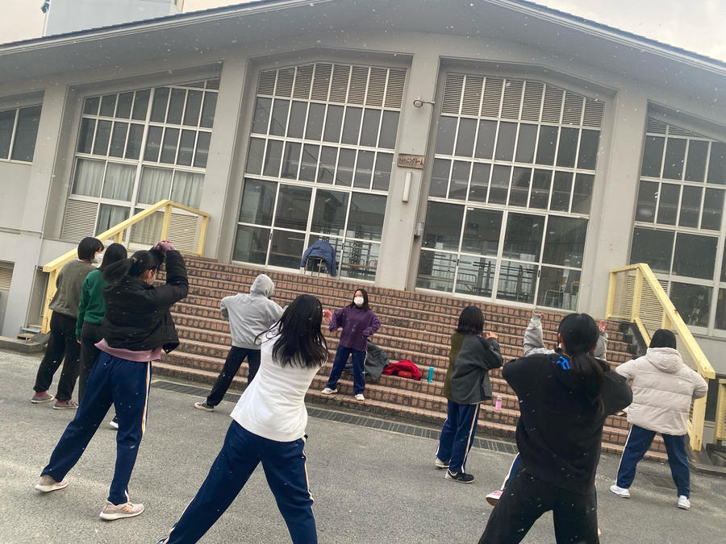
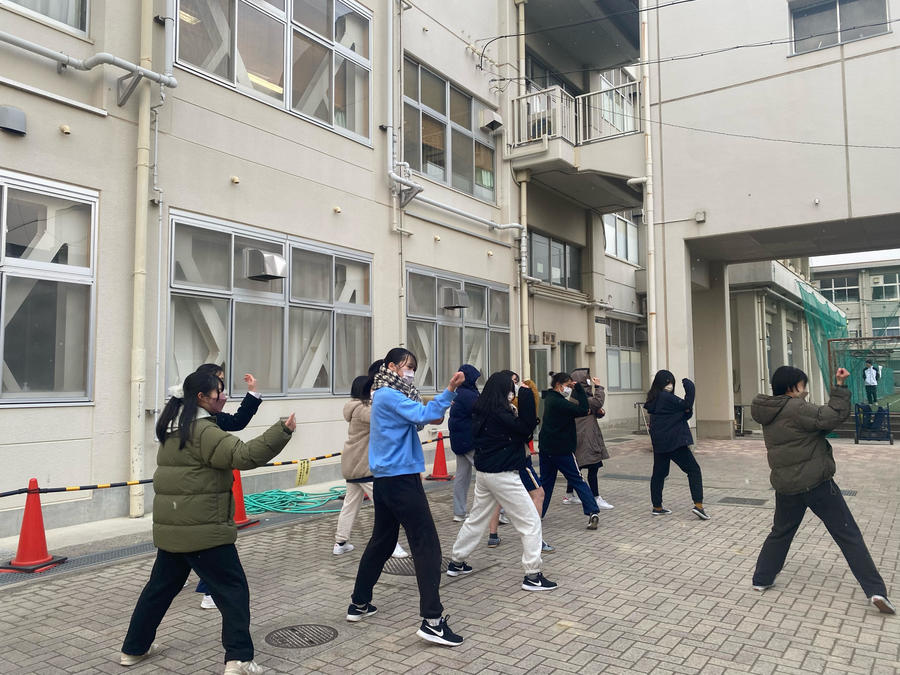
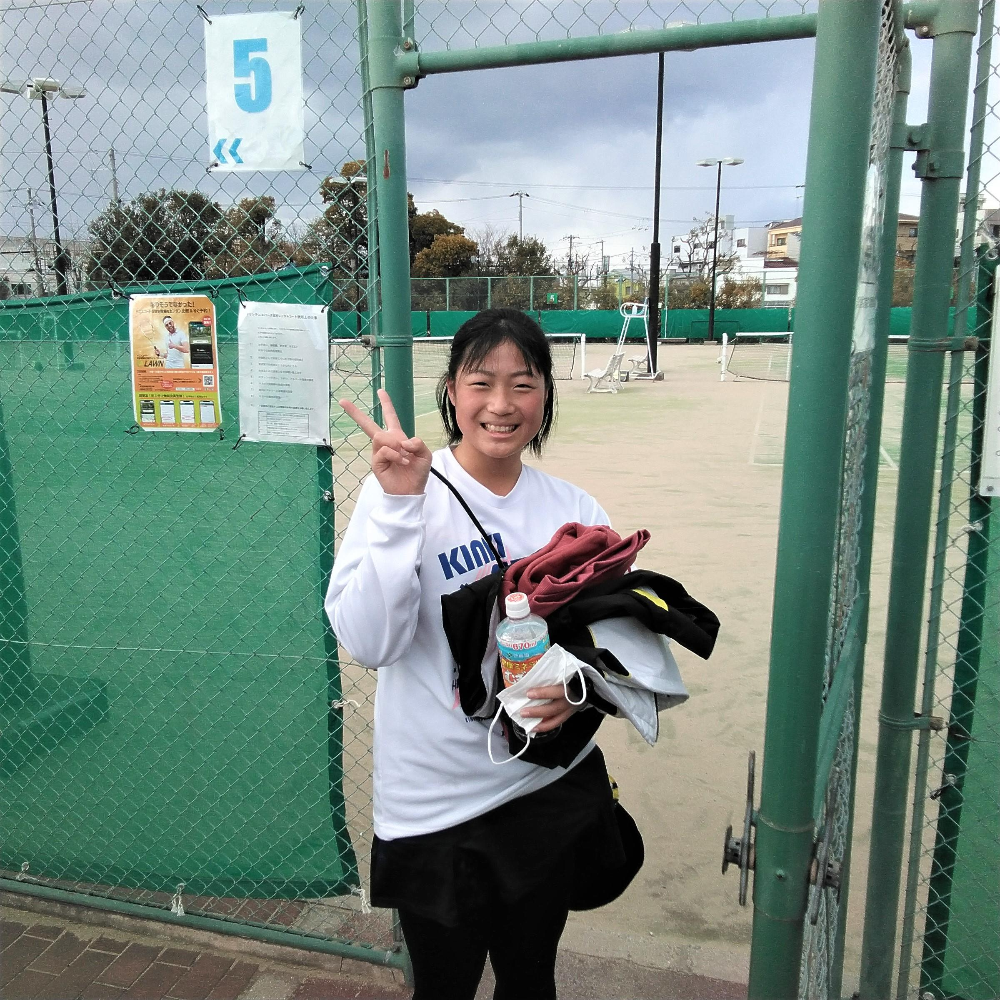
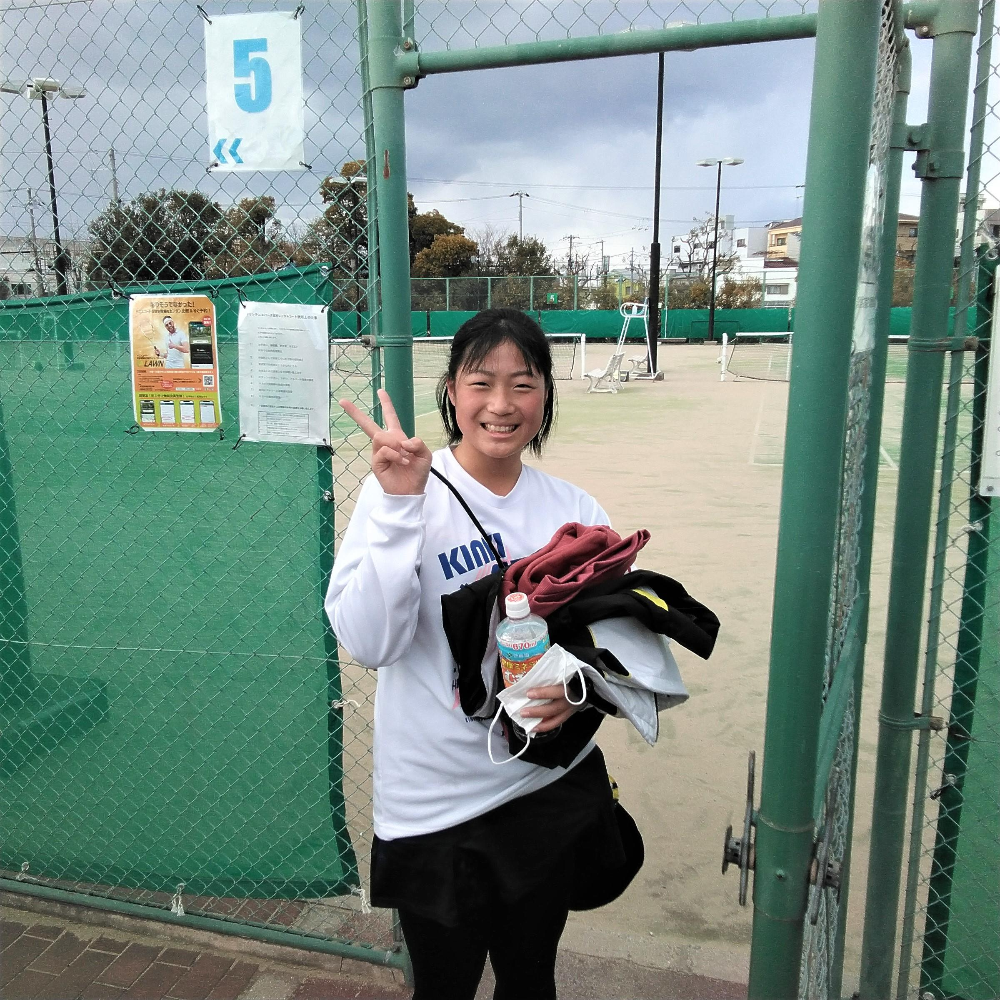
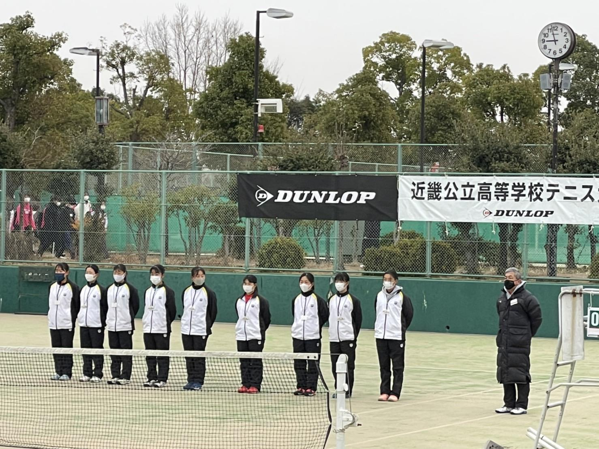
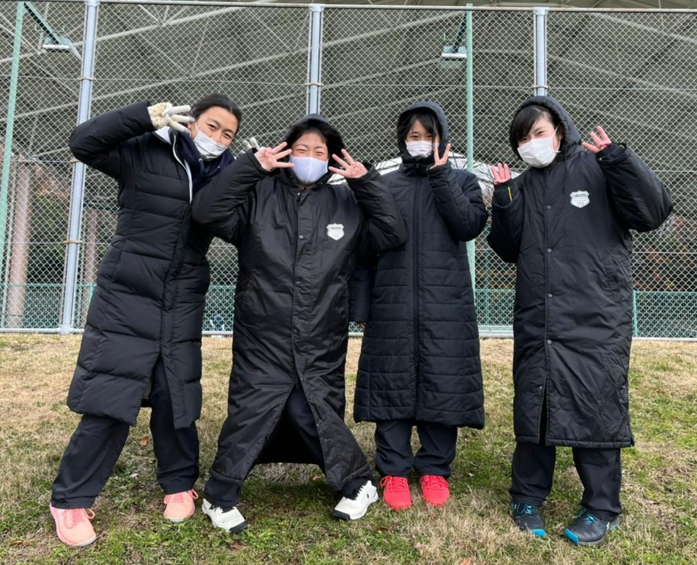
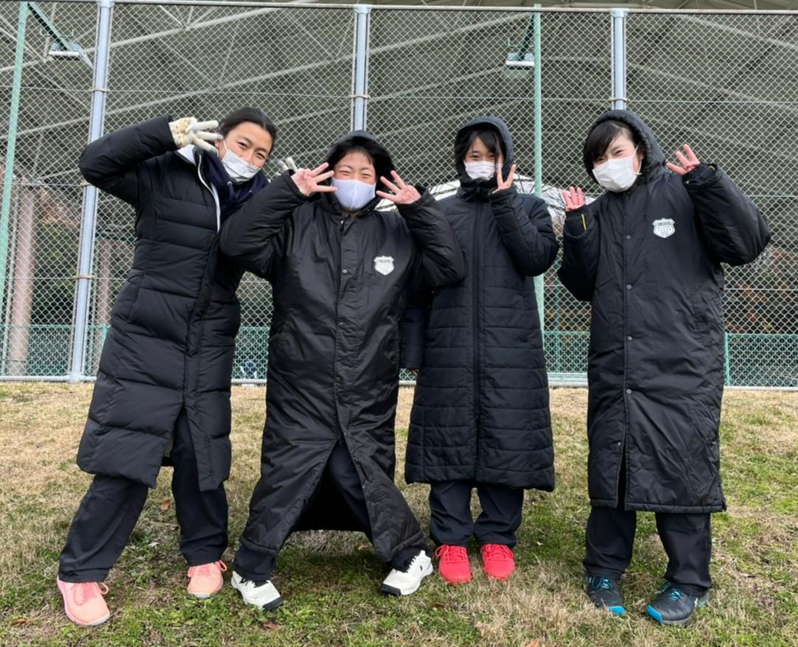

京都府教育委員会主催「オリンピック・パラリンピック讃歌～書道部によるパフォーマンス」動画がYouTubeによる限定公開されています。著作権等に係る使用許諾の関係上、多くの方にご覧いただくことができませんが、写真にて一部ご紹介いたします。
ダンス部練習風景
今日も寒い中、感染症対策を徹底しながら活動しています。
最近は、卒業公演に向けて引退した３年生が練習に参加するが日があり、みんな嬉しそうです。



普段は、１・２年生合同でジャンルごとに分かれて練習しています。
今日は練習の最後にHIPHOPを踊るグループが通し練習をしているところをほかの部員たちが見ていました。

○２月５日（土）、６日（日）に、
大阪市のマリンテニスパーク・北村で開催された、
第10回近畿公立高等学校テニス大会個人の部に、
２年生４名が京都府の代表として参加し、
藤本萌七未が、ベスト４に入り、表彰されました。
新型コロナウイルス感染症拡大の影響で、
十分な練習ができない中、
みんな全力を尽くして戦いました。
詳細は以下の通りです。
・予選Bリーグ 五十川夏琉 16 伊川谷北高２年(兵庫)
五十川夏琉 26 桜宮高２年(大阪)
・予選Cリーグ 藤本萌七未 62 栗東高２年(滋賀)
藤本萌七未 62 枚方高１年(大阪)
・予選Gリーグ 安田 奈央 06 栗東高１年(滋賀)
安田 奈央 16 加古川北高１年(兵庫)
・予選Kリーグ 本間 涼帆 61 みどり清朋高１年(大阪)
本間 涼帆 60 奈良高２年(奈良)
・決勝1.2位トーナメント
１R 藤本萌七未 60 一条高２年(奈良)
本間 涼帆 62 神戸高２年(兵庫)
２R 藤本萌七未 76(2) 宝塚西高２年(兵庫)
本間 涼帆 57 栗東高２年(滋賀)
３R 藤本萌七未 60 狭山高２年(大阪)
準決勝 藤本萌七未 46 伊川谷北高２年(兵庫)
・決勝３位トーナメント
１R 五十川夏琉 06 枚方高１年(大阪)
２R 安田 奈央 61 和歌山商業高２年(和歌山)
３R 安田 奈央 62 北稜高２年(京都)
決勝 安田 奈央 57 須磨翔風高１年(兵庫)
・コンソレーションマッチ
五十川夏琉 45(4) 奈良高２年(奈良)


 



オリンピック・パラリンピック讃歌 書道部による作品制作
書道部1年生の作品がホテルルビノ京都堀川に展示されています。（２月１日～３月11日）
また京都府教育委員会保健体育課学校体育係ホームページにも掲載されています。ご覧ください。
http://www.kyoto-be.ne.jp/hotai/cms/?action=common_download_main&upload_id=3536

女子テニス部は、令和４年１月５日㈬･６日㈭に、
大阪市･マリンテニスパーク北村で開催された、
第19回近畿公立高等学校テニス大会団体の部において、
準優勝の成績を収めました。
大会への出場は１２年連続、
決勝戦に臨むのは３回目でしたが、
惜しくも初優勝を逃しました。
悲願の達成に向けて、さらに努力を重ねます。
対戦結果
予選トーナメント １Ｒ 山城 ５０ 池田(大阪)
２Ｒ 山城 ３０ 東大津(滋賀)
決勝トーナメント １Ｒ 山城 ３１ 三島(大阪)
準決勝 山城 ３２ 加古川北(兵庫)
決勝 山城 ２３ 栗東(滋賀)
＊綿密な感染症対策の中、大会を実施していただいた実行委員会の皆様、
練習試合をしていただいた各校テニス部の皆様、男子テニス部、
選手の練習を支えていただいた保護者の皆様、
ありがとうございました。
 


◎１２月２５日㈯と２６日㈰に、
山城総合運動公園で開催された、
京都招待テニス選手権大会に京都府代表として出場し、
団体の部で準決勝で敗退し、三位決定戦で勝利して、
第三位の成績を収めました。
個人戦では、シングルスもダブルスも、
１Ｒを勝ち上がることができました。
対戦結果
団体の部 １Ｒ 山城 ２１ 大阪女学院(大阪)
２Ｒ 山城 ２０ 近代和歌山(和歌山)
準決勝 山城 ０２ 園田学園(兵庫)
三位決 山城 ２０ 奈良学園(奈良)
個人の部シングルス
１Ｒ 藤本萌七未(２年) ３６ 大阪女学院(２年)(大阪)
本間 涼帆(２年) ６０ 開智(２年)(和歌山)
２Ｒ 本間 涼帆(２年) ０６ 奈良育英(２年)(奈良)
ｺﾝｿﾚｰｼｮﾝﾏｯﾁ 藤本萌七未(２年) ４１ 奈良育英(１年)(奈良)
藤本萌七未(２年) ２４ 園田学園(２年)(兵庫)
本間 涼帆(２年) ４０ 栗東(２年)(滋賀)
本間 涼帆(２年) ０４ 園田学園(２年)(兵庫)
個人の部ダブルス
１Ｒ 安田(２年)永井(２年) ６２ 開智(２年生ペア)(和歌山)
２Ｒ 安田(２年)永井(２年) １６ 立命館守山(２年生ペア)(滋賀)
ｺﾝｿﾚｰｼｮﾝﾏｯﾁ 安田(２年)永井(２年) １４ 園田学園(２年生ペア)(兵庫)
 

弓道部の紹介
作法を重んじる道です。山城高校弓道部は師範の先生のもと、正しい弓道の道を日々練習しています。環境としては屋根も床もなく、的も３的しか立てられないので大変ですが、部員全員で協力して一生懸命取り組んでいます。
他のスポーツとは違い、高校から弓道を始める人が殆どなので、インターハイなどの全国大会を目指しやすい部活です。高校でも部活に入りたいけれど、どれに入ろうか悩んでいるという人は、是非一度弓道場を覗いてみてください。
第14回 日本高校ダンス部選手権 冬の公式大会 西日本大会
2021年12月28日(火)にメイシアターにて、第14回日本高校ダンス部選手権 冬の公式大会西日本大会が開催されました。

「LEAPジャンキー」
２年生２人、１年生１人、全員が初出場の中、それぞれの個性を組み合わせたフリと組技で挑戦してきました！
OBの方や色々な人たちに支えていただいたため、初戦敗退という結果になってしまったのは悔しいですが、夏に向けて更に力をつけることができた練習期間でした。本番もとても楽しんで全力を出すことができました！

「ちょっぴりポチャphant」
私たちは女子２人、男子１人といった組合せで、各々が得意なジャンルを持ち合わせ、たくさんのジャンルに挑戦しました。衣装は赤青緑の三原色で、メンバー１人１人の個性を表現しました。試合には負けてしまいましたが、練習や大会を通してたくさんのことを吸収できたので、夏の大会に向けて日々頑張っていきます。

大会関係者の皆様、このような状況下で大会を開催していただきありがとうございました。
保護者の皆様、日頃より御支援・御協力いただきありがとうございました。
第４２回関西中学校・高等学校バトントワーリング大会

{kind=link}
令和３年１２月１８日（土）に開催された「第４２回関西中学校・高等学校バトントワーリング大会」において、以下の成績を収めました。
高校バトンの部 金賞
本校バトン部としては今年で４回目の出場ですが、今回は初めて１・２年生の合同チーム（総勢４６名）で臨みました。新型コロナウイルスの影響で部活動が思うようにできない中、またこの春バトンを始めたばかりの１年生を２年生がリードして金賞まで漕ぎ着けたことは、大きな成果であり喜びです。まだまだ課題はありますが、確かな成長の実感を大事にしながら、より良い演技と部活動を目指します。これからも応援をよろしくお願いします。
第４６回京都府高等学校バトントワリングコンテスト
令和３年６月１９日（土）に開催された「第４６回京都府高等学校バトントワリングコンテスト」において、以下の成績を収めました。
バトンの部 Ａチーム（３年生）金賞・特別賞
Ｂチーム（２年生）銀賞
Ｃチーム（１年生）銀賞
ポンポンの部Ａチーム（３年生）金賞・グランプリ
Ｂチーム（２年生）銀賞
昨年度のこの大会は新型コロナウイルス感染拡大防止のため中止となりました。先輩達の無念さを胸に、今年の３年生が大きな成果を収めました。
特にポンポンの部では、グランプリ受賞によって来年度の全国高等学校総合文化祭東京大会に推薦されました。令和４年８月に京都府代表として後輩達が出場することになります。
またバトンの部においては、ユニークな作品と溌剌とした演技を評価され、特別賞をいただきました。
部員を支えてくださった全ての方々に感謝申し上げます。
{kind=link}
{kind=link}
カテゴリ一覧
主要リンク